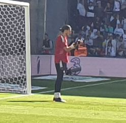

Ezzcoins › Player pages › Kamil Grabara

81
GK

Grabara
DIV82
HAN79
KIC76
REF85
SPD82
POS83
Kamil Grabara
81 GK · VfL Wolfsburg · Bundesliga 2 ·  Poland
Poland
No console price yet. Add this player to your watchlist on Ezzcoins: the most-watched players get a price every hour.
83Meta rating · GK +2 vs overall
DIV82
HAN79
KIC76
REF85
SPD82
POS83
Chemistry style
Turn on JavaScript to see this card with each chemistry style.
- Position
- GK
- Club
- VfL Wolfsburg
- League
- Bundesliga 2
- Nation
- Poland
- Skill moves
- 1★
- Weak foot
- 3★
- Preferred foot
- Right
Meta rating: Ezzcoins' own estimate of how well this card plays in game, worked out from its stats for each position it can play, its skill moves, weak foot and PlayStyle+. An average card scores about its overall rating; higher means it plays above its rating.
Watch on EzzcoinsMore from VfL Wolfsburg
- 85
 Svenja HuthRM
Svenja HuthRM - 84Janina MingeCDM
- 83
 Kessya BussyLW
Kessya BussyLW - 82
 Lara PrašnikarST
Lara PrašnikarST - 82Lena LattweinCM
- 81Sophia KleinherneCB
- 80Lou BogaertLB
- 80Sarai LinderRB